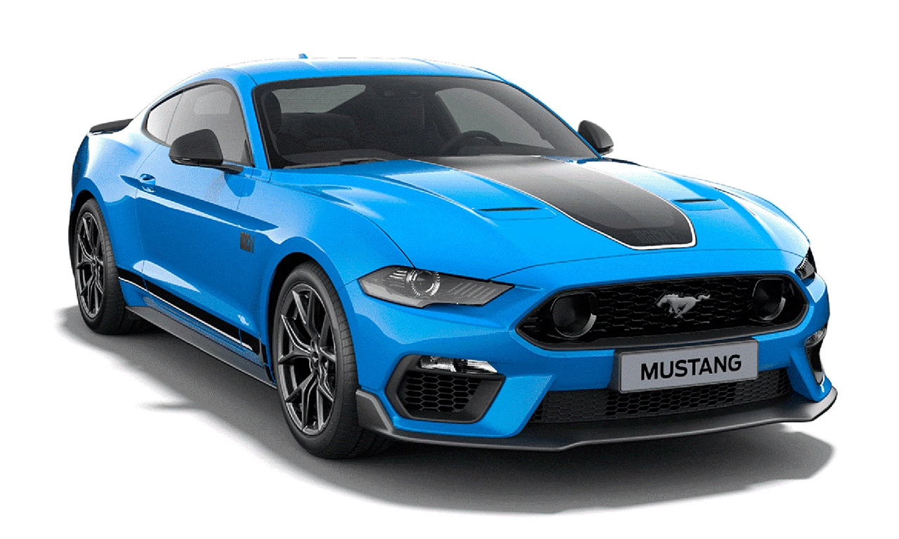
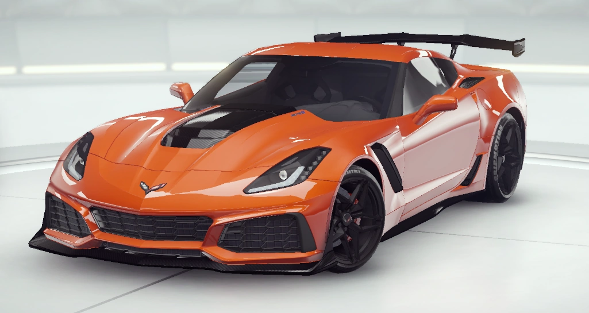

• 5.0 V8 483cv
• 45 kgfm de torque
• 0 a 100 km/h em 3,7 segundos
➔
Mustang Mach 1 é uma homenagem aos modelos clássicos da Ford. O Mach 1 original foi introduzido pela primeira vez em 1969 e era conhecido por seu desempenho impressionante e estilo icônico.• 5.0 V8 483cv
• 45 kgfm de torque
• 0 a 100 km/h em 3,7 segundos

➔
Porsche 911 Turbo S é um ícone dos carros esportivos há décadas. Com seu design distintivo e características de desempenho excepcionais, 911 é amplamente reconhecido como um dos carros mais emblemáticos da história automotiva.• 3.8 Flat-Six Twin-Turbo 650 cv
• 81,6 kgfm de torque máximo
• 0 a 100 km/h em 2,7 segundos

➔
Ferrari 488 GTB é um dos carros esportivos mais famosos do mundo. Possui um motor V8 turbo de 3.9 litros, proporcionando uma experiência de condução emocionante e desempenho excepcional.• 3.9 V8 turbo 670 cv
• 77,5 kgfm de torque
• 0 a 100 km/h em 3,7 segundos

• 6.2 V8 755cv
• 98,9 kgfm de torque
• 0 a 100 km/h em 2,85 segundos
➔
Chevrolet Corvette ZR1(C7) é um dos carros esportivos americanos mais icônicos e reconhecíveis. Com sua poderosa combinação de desempenho, estilo e valor, o Corvette conquistou uma base de fãs dedicada ao longo das décadas.• 6.2 V8 755cv
• 98,9 kgfm de torque
• 0 a 100 km/h em 2,85 segundos